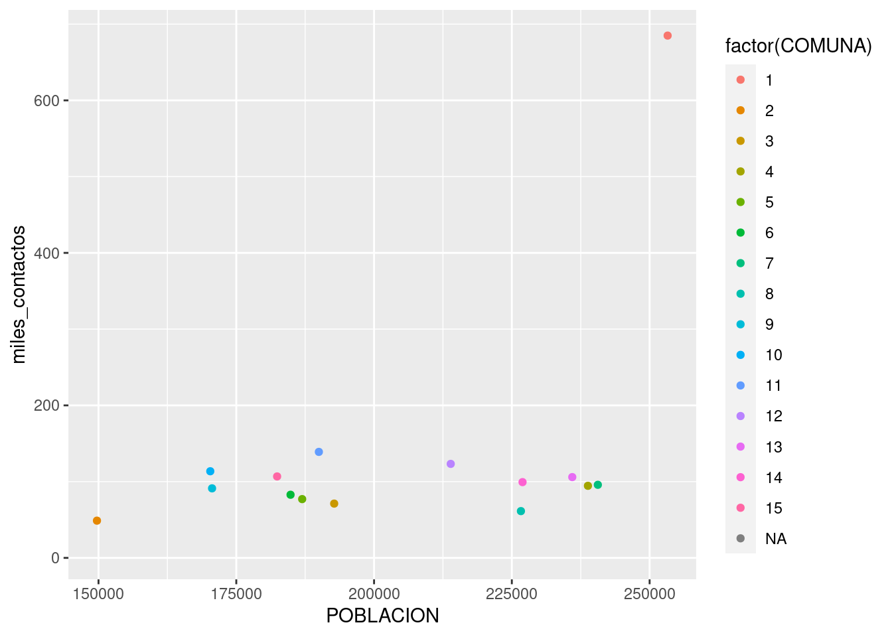
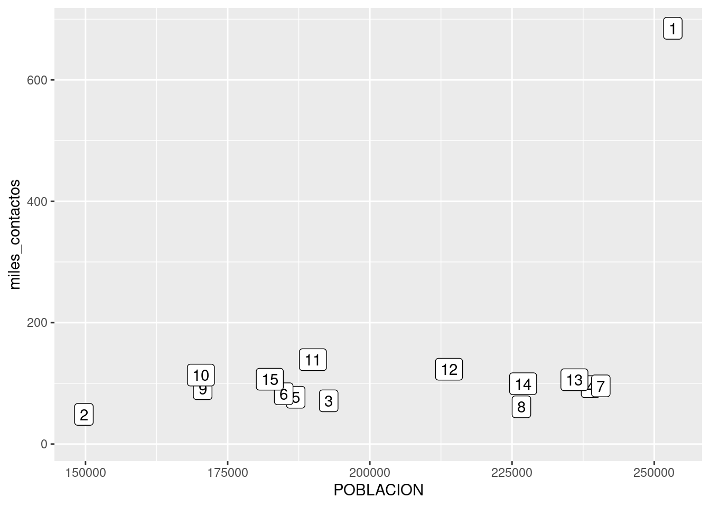
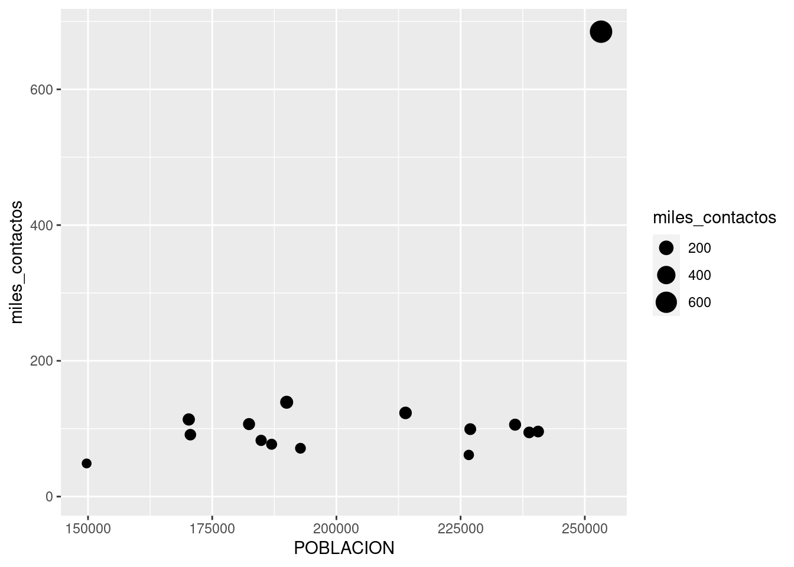
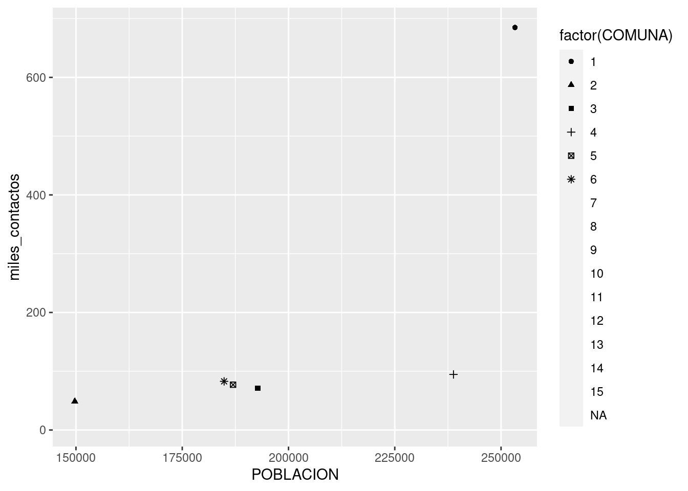

- 1 ¿Qué es la ciencia de datos?
- 2 Una presentación a toda marcha de R
- 3 Poniendo los datos en forma
- 4 Visualización
- 5 Modelado estadístico
- 6 Información geográfica y mapas
4.1 Una buena visualización para empezar: el scatterplot
Los gráficos de dispersión, o scatterplots, son quizás el tipo de visualización más conocido. Consisten en puntos proyectados en un eje de coordenadas, donde cada punto representa una observación. Son útiles para mostrar la correlación entre dos variables numéricas.
Por ejemplo, podríamos asumir que existirá una correlación positiva entre la cantidad de habitantes de una comuna y la cantidad de contactos anuales que sus habitantes hacen a las líneas de atención al ciudadano. Es decir, cuantas más personas vivan en una comuna, es de esperarse que sea mayor la cantidad de quejas, denuncias, etc. que se originan allí.
Activamos el paquete tidyverse, si aún no lo habíamos hecho.
Y si no lo tenemos ya cargado, leemos de nuevo el dataframe con los registros de atención al ciudadano (esta versión incluye la columna “COMUNA”).
Usando los verbos de transformación que aprendimos, es fácil obtener un dataframe resumen con los totales anuales por comuna. Vamos a expresar los totales en miles de contactos, para evitar trabajar con números tan grandes.
contactos_por_comuna <- atencion_ciudadano %>%
group_by(COMUNA) %>%
summarise(miles_contactos = sum(total) / 1000 )
contactos_por_comuna## # A tibble: 16 × 2
## COMUNA miles_contactos
## <int> <dbl>
## 1 1 685.
## 2 2 48.8
## 3 3 71.2
## 4 4 94.5
## 5 5 77.1
## 6 6 82.8
## 7 7 95.8
## 8 8 61.3
## 9 9 91.2
## 10 10 114.
## 11 11 139.
## 12 12 123.
## 13 13 106.
## 14 14 99.3
## 15 15 107.
## 16 NA 5.78Lo que nos falta ahora es la cantidad de habitantes en cada comuna. No problem. El dato es fácil de conseguir, otra vez cortesía de la Dirección General de Estadística y Censos de la Ciudad de Buenos Aires. Traemos la proyección al año 2017 de la cantidad de habitantes por comuna.
## COMUNA POBLACION
## 1 1 253271
## 2 2 149720
## 3 3 192763
## 4 4 238809
## 5 5 186956
## 6 6 184846
## 7 7 240607
## 8 8 226649
## 9 9 170605
## 10 10 170282
## 11 11 189986
## 12 12 213914
## 13 13 235967
## 14 14 226944
## 15 15 182409Por suerte, ya sabemos como combinar tablas usando left_join()
## Joining, by = "COMUNA"## # A tibble: 16 × 3
## COMUNA miles_contactos POBLACION
## <int> <dbl> <int>
## 1 1 685. 253271
## 2 2 48.8 149720
## 3 3 71.2 192763
## 4 4 94.5 238809
## 5 5 77.1 186956
## 6 6 82.8 184846
## 7 7 95.8 240607
## 8 8 61.3 226649
## 9 9 91.2 170605
## 10 10 114. 170282
## 11 11 139. 189986
## 12 12 123. 213914
## 13 13 106. 235967
## 14 14 99.3 226944
## 15 15 107. 182409
## 16 NA 5.78 NA!Preparativos terminados! Hagamos por fin nuestro scatterplot. Tal como en el capítulo de introducción a R, continuaremos usando ggplot() para visualizar:

¿Un gráfico vacío? Recordemos que ggplot funciona por capas. Primero uno declara el dataframe que va a usar, y luego agrega una o más capas con representaciones de la información. La forma de agregar una capa con un scatterplot, en la práctica dibujar puntos, es con geom_point:
## Warning: Removed 1 rows containing missing values (geom_point).Lo que hicimos fue pedirle a ggplot que dibuje un punto por cada fila (representando a cada comuna), con la posición en el eje de las x según su población, y en el eje de las y según la cantidad de contactos registrados. Estas referencias estéticas (aesthetics en inglés) son las que van dentro de la función aes() en geom_point(aes(x = POBLACION, y = miles_contactos))
Primer sorpresa: ¡en el extremo superior derecho hay una comuna que se sale de la norma! Su relación población/reclamos es muy diferente a la de todas las demás. Podemos identificarla, pidiendo a ggplot que agregue una variable más a la visualización -la comuna. Siendo un gráfico en dos dimensiones, ya no podemos usar la posición para representar un valor; tanto la posición horizontal como la vertical están siendo usadas por población y total. Nuestras opciones son codificar la comuna por color, forma o tamaño del punto. A pesar de que son identificadas con números, las comunas son una variable categórica: no tiene sentido decir que la comuna 1 es “menor” que la comuna 7. Par las variables categóricas, el color suele ser una buena opción de codificación.
Lo hacemos agregando un parámetro color dentro de aes(). Tal como hicimos en el capítulo 2, usamos factor(COMUNA) en lugar de COMUNA a secas para indicarle a R que queremos que trate a la variable como categórica:
ggplot(contactos_por_comuna) +
geom_point(aes(x = POBLACION, y = miles_contactos, color = factor(COMUNA)))## Warning: Removed 1 rows containing missing values (geom_point).
En ese caso, no es tan fácil discernir cuál es cuál, pero mirando con cuidado descubrimos que la comuna 1 es el outlier, el valor fuera de lo común. Lo que nos pasa aquí es que tenemos demasiadas categorías, con lo cual cada una tiene su propio color pero el rango cromático no alcanza para darle a cada una un tono bien distinto al de las demás.
Si necesitamos generar un gráfico que no deje lugar a dudas, lo resolvemos usando un método alternativo para el scatterplot. En lugar de dibujar puntos, podemos poner etiquetas con el nombre de cada comuna.
En lugar de
ggplot(contactos_por_comuna) +
geom_point(aes(x = POBLACION, y = miles_contactos, color = factor(COMUNA)))usamos
ggplot(contactos_por_comuna) +
geom_label(aes(x = POBLACION, y = miles_contactos, label = factor(COMUNA)))## Warning: Removed 1 rows containing missing values (geom_label).
Volvamos a nuestros puntos para practicar dos codificaciones estéticas que no hemos probado, color y tamaño.
Para dejar aún más clara la diferencia de reclamos entre comunas, podríamos usar el tamaño (size) de cada punto para representar esa variable, además de su altura en el gráfico.
ggplot(contactos_por_comuna) +
geom_point(aes(x = POBLACION, y = miles_contactos, size = miles_contactos))## Warning: Removed 1 rows containing missing values (geom_point).
Y para distinguir cuál es cuál, podemos pedirle a ggplot que cambie la forma (shape) de cada punto según la comuna a la que corresponde.
ggplot(contactos_por_comuna) +
geom_point(aes(x = POBLACION, y = miles_contactos, shape = factor(COMUNA)))## Warning: The shape palette can deal with a maximum of 6 discrete values because more than 6 becomes
## difficult to discriminate; you have 15. Consider specifying shapes manually if you must have them.## Warning: Removed 10 rows containing missing values (geom_point).
¡Hey, sólo aparecen seis de las comunas! ggplot() usa cómo máximo 6 formas distintas, debido a que una cantidad mayor sería de veras muy difícil de discernir para nuestros pobres ojos. Moraleja: la estética shape sirve sólo cuando manejamos pocas categorías. De todas formas -en mi opinión- es el método de codificación que menos gracia tiene, así que no es grave que su utilidad sea limitada.